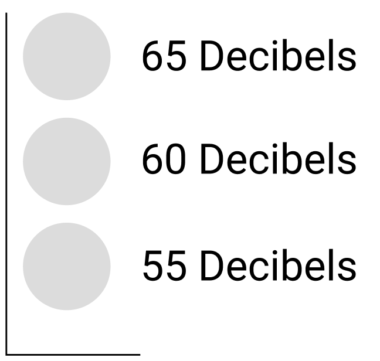
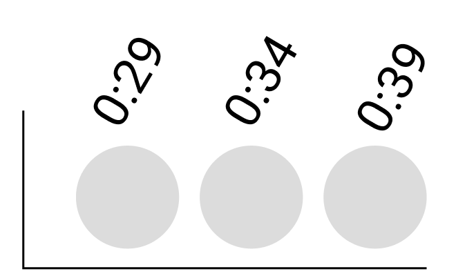
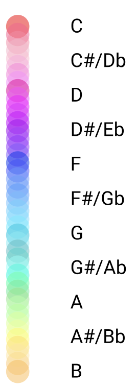

Music feels different to different people. As you listen, you hear different notes, volumes, timbres and all of these are supported by the time and rhythm the music is played in. In an effort to visualize how we experience the music, the visualizations seek to outline time, volume, and pitch.
Volume (the y axis)

Time (the x axis)

Pitch (Color)
